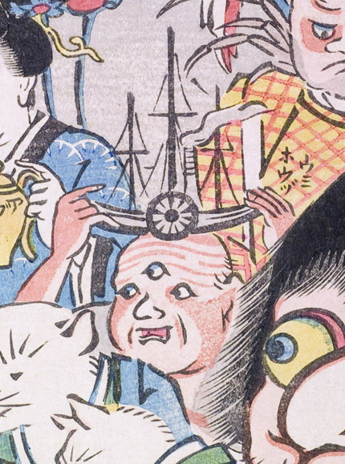

海坊主；ウミボウズ，三つ目；ミツメ，蒸気船；ジョウキセン，男；オトコ

三つ目の化物が頭に蒸気船を乗せている。水車がついた蒸気船は黒くマストが3本立ち、煙突から煙が出ている。
著作者：玉園／出典：親書誌：U426_nichibunken_0145：画本西遊記百鬼夜行ノ圖；エホンサイユウキヒャッキヤギョウノズ／日付：2009／資源識別子：U426_nichibunken_0145_0016_0000
Copyright (c)2010- International Research Center for Japanese Studies, Kyoto, Japan. All rights reserved.